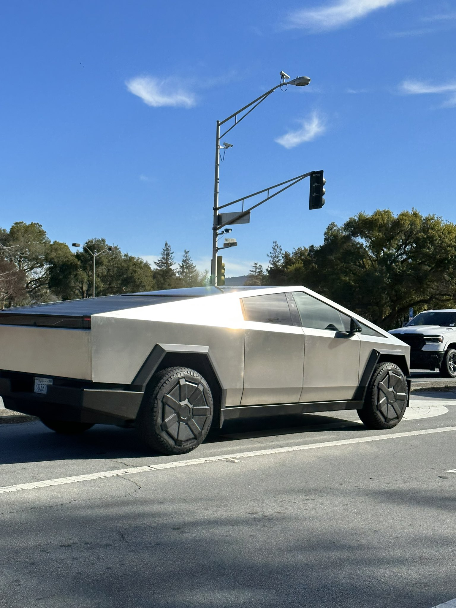

|
Driving Tesla
@DrivingTeslaca · May 5
South Korea firm wins $300 million Tesla Cybertruck parts supply contract |
|
TESLARATI
@Teslarati · May 5
Tesla Cybertruck production teased in $227M+ order for parts teslarati.com/tesla-cybertru...by @Writer_01001101

teslarati.com
Tesla Cybertruck production teased in $227M+ order for parts Tesla ordered Cybertruck parts work more than $227 million from South Korean company Seoyon E-Hwa. The news teased Cybertruck... |